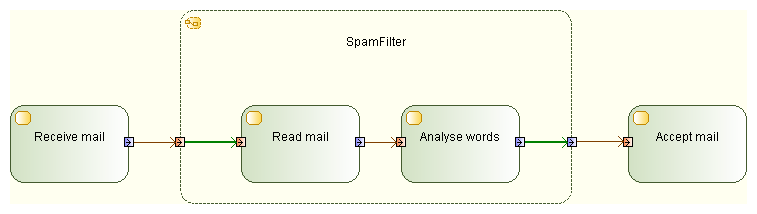

OutputPins may have incoming edges only when they are on StructuredNodes, and these edges must have a source node contained by the StructuredNode.
OutputPins may have incoming edges only when they are on StructuredNodes, and these edges must have a source node contained by the StructuredNode.
Example:

When you get an R1370 error, verify that what you want to achieve is a configuration as in the example below. If this is the case, make sure the incriminated OutputPin only has incoming object flows from Nodes which are inside the StructuredNode.